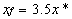
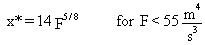
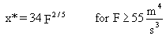
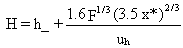
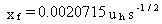
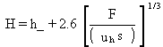
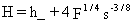

4.11 PLUME RISE
Plume
rise formulations given by Briggs (1969, 1971, 1973, 1975) and reported
in Petersen et al. (1984) are used in the MEPAS atmospheric model. The
plume rise equations are based on the assumption that plume rise depends
on the inverse of the mean wind speed and is directly proportional to the
two-thirds power of the downwind distance from the source. Different equations
are used for different atmospheric stabilities.
The plume rise equations used for unstable and stable atmospheric conditions
are summarized below. For additional details of the plume rise formulation,
the reader is referred to the detailed description of the plume rise formulations
by Petersen et al. (1984).
4.11.1 Unstable and Neutral Atmospheric Conditions
The plume rise relationships are as follows:

(68)
where
xf = downwind distance of final plume rise (m)
x* = distance at which atmospheric turbulence begins to dominate entrainment.
The value of x* is computed from

(69)
or

(70)
where F is the buoyancy flux parameter (m4/s3). The final plume rise is given by

(71)
where
H = effective height of plume (m)
h' = stack height above sea level adjusted for stack downwash (m)
uh = wind speed at top of stack (m/s).
4.11.2 Stable Atmospheric Conditions
The relationships for distance expressed as a function of stability parameter are

(72)
where s = stability parameter (1/s).
The plume rise height for windy conditions is given by

(73)
or for near-calm conditions

(74)
The lower value of H computed from these two
equations is used as the final plume rise.